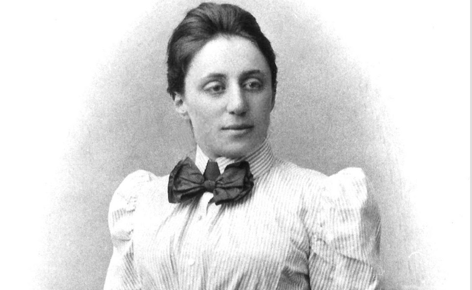
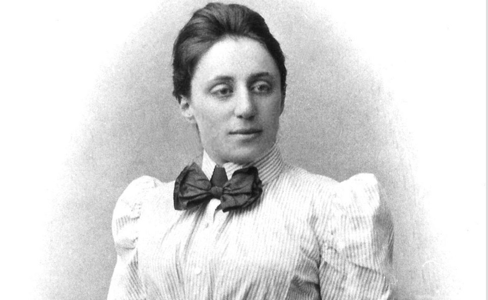
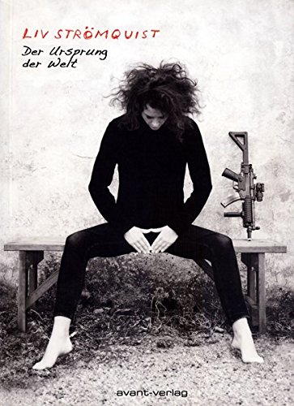
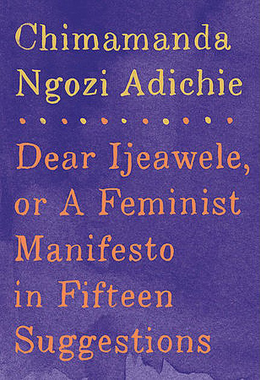
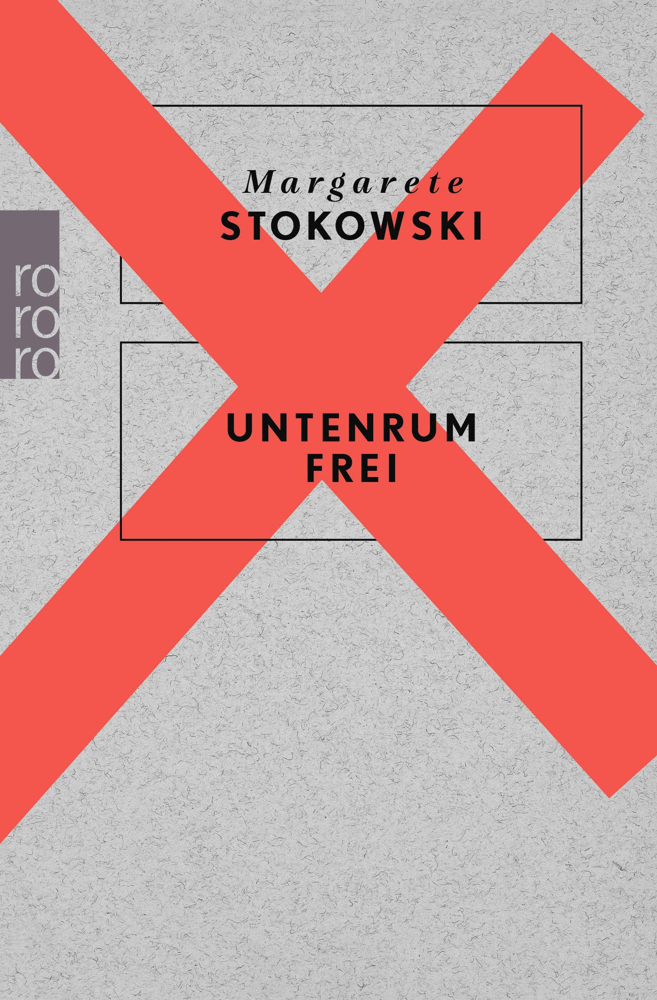
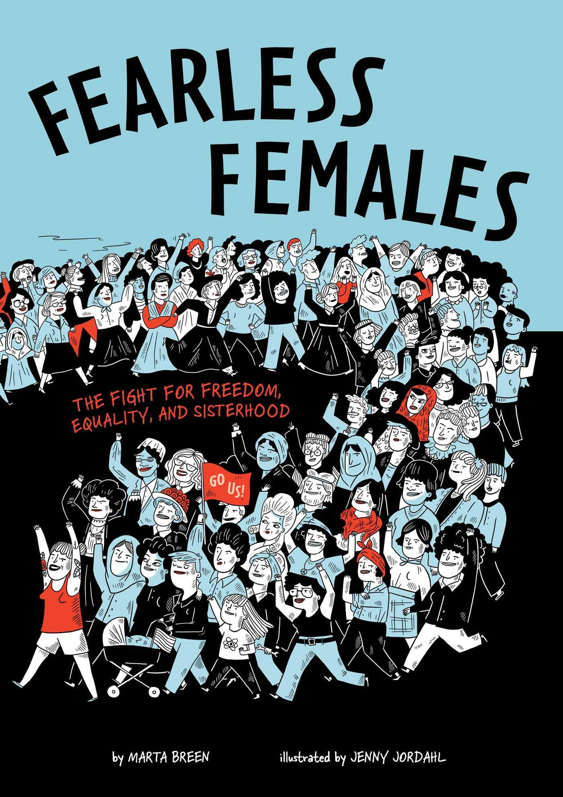
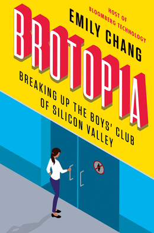

FEMINISM
I am convinced that equality between women and men, as required by Article 23 of the Charter of Fundamental Rights of the European Union, is far from being achieved.
I am convinced that this is an important issue on which we should talk and discuss more.
That is why I call myself a feminist.
This page is dedicated to draw people' s attention to this issue.
Because we must name the problem in order to make it visible and then tackle it together as a society.
AT WORK
- Member of the Gender Equality Task Team of the research institute IRISA and Inria Rennes Bretagne Atlantique
- Mediation: LcodentLcréent program (They code, they create) to encourage female college students to learn Python and use it to create their own art
- Mediation: J'peux pas j'ai informatique day to raise awareness of college students that computer science is not only for geeks
VISIBILITY
 

{kind=link}
{kind=link}
.jpg)
- Posters about women with great contributions in maths and/or computer science - to be continued (English)
You can find a printed version of each poster in my office, when you visit me :-)- Ada Lovelace (see also this France Culture podcast (French), giving more interesting insights to her life, thanks S. Moreau for drawing my attention to it)
- Emmy Noether (see also this very affectionate and cordial BBC podcast (English), thanks W. Widel for recommanding it)
- Katherine Johnson
- Joan Clarke Wikipedia Article
- Susan Wojcicki Wikipedia Article
- Follow me on Twitter @KBoudgoust (English)
VIDEO
- KREATUR Series on ARTE (French/German)
- TED Talk of Dame Stephanie Shirley - Why do ambitious women have flat heads? TED talk (English)
- Hidden Figures Trailer (English)
AUDIO
- YESSS Un podcast de Warriors Podcast (French, for example #17 Warriors en grandes ecoles )
- Podcast a soi on ARTE radio Podcast (French, for example Femmes noires et flamboyantes)
- Les couilles sur la table on Binge audio Podcast (French, for example Des ordis, des souris et des hommes)
- Der Lila Podcast (German, for example Lila145 Hermione Granger & Co.: die Frauen neben Harry Potter)
BOOKS
    {kind=link}
.png){kind=link}
- Fruit of Knowledge by Liv Stroemquist with a review of The Guardian (English)
- Dear Ijeawele, or A Feminist Manifesto in Fifteen Suggestions by Chimamanda Ngozi Adichie (English)
- Untenrum frei by Margarete Stokowski (German)
- Fearless Females by Marta Breen (English)
- Brotopia by Emily Chang (English)